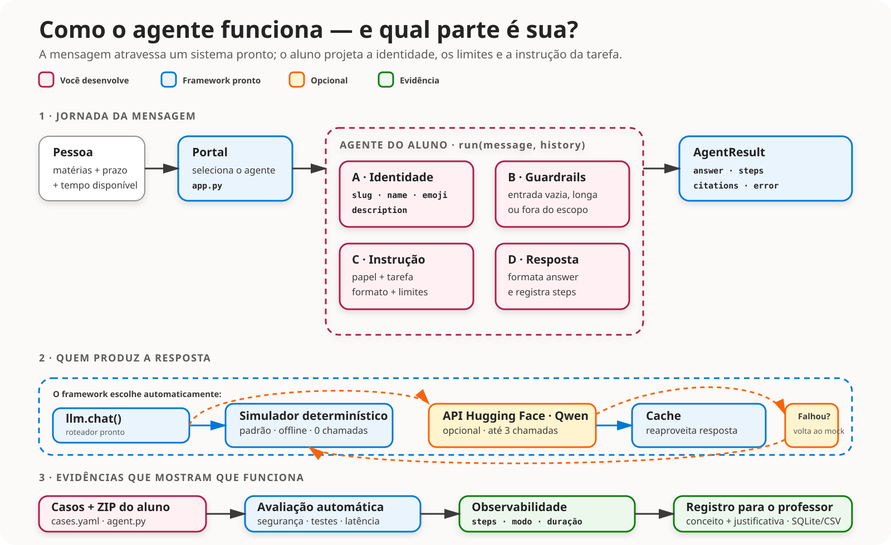

Objetivo didatico
Tornar visivel o ciclo de um agente: escopo, contrato, construcao, teste, guardrail, observabilidade e limite de recursos.
Nao e objetivo: ensinar infraestrutura, Git ou deploy durante a imersao.
Roteiro de duas aulas para iniciantes: construir offline, testar, proteger, entregar e avaliar.
Offline-first3 chamadas no maximoConceitos A–DTornar visivel o ciclo de um agente: escopo, contrato, construcao, teste, guardrail, observabilidade e limite de recursos.
Nao e objetivo: ensinar infraestrutura, Git ou deploy durante a imersao.
MOCK_LLM=1.Offline: nenhum modelo de IA. Uma funcao Python previsivel simula a resposta para validar fluxo, formato, guardrails e testes.
API opcional: Qwen/Qwen2.5-7B-Instruct roda no Hugging Face e exige internet e HF_TOKEN.
Ele separa duas dimensoes da atividade: engenharia do sistema e qualidade da resposta generativa.
O resultado deterministico permite localizar erros no fluxo antes que variacao, rede ou limite de API entrem na investigacao.
HF_TOKEN no HTML ou JavaScript. O GitHub Pages e estatico e nao protege segredos. Uma versao publica com IA real exigiria um backend autenticado com cota por usuario ou turma, limite de entrada e saida, timeout, cache, moderacao e monitoramento de custo. Para esta imersao, use a API apenas no portal local e sob orientacao.

| Evidencia | Como observar |
|---|---|
| Contrato valido | check_agent.py conclui sem erro. |
| Tres casos | Normal, dificil e vazio/muito longo em YAML. |
| Guardrail | Entrada inadequada e tratada antes do modelo. |
| Observabilidade | AgentResult.steps explica o fluxo. |
| Entrega | ZIP avaliado no portal e registrado em SQLite/CSV. |
| Tempo | Atividade | Evidencia |
|---|---|---|
| 0–15 | Demonstrar o produto pronto | Entrada, saida e passos reconhecidos |
| 15–35 | Criar ambiente e instalar | Checkpoint 0 |
| 35–75 | Escrever escopo e criterios | Uma tarefa verificavel |
| 75–90 | Pausa e atendimento | Dificuldades agrupadas |
| 90–125 | Copiar e editar o template | Arquivo individual |
| 125–145 | Preflight e depuracao em dupla | Checkpoint 1 |
| 145–170 | Testar no portal | Checkpoint 2 |
| 170–180 | Exit ticket | Uma melhoria para a aula seguinte |
python check_agent.py agents/example_resumidor.py
python check_agent.py agents/<slug>.py
python app.py| Tempo | Atividade | Evidencia |
|---|---|---|
| 0–15 | Retomar a Definition of Done | Base comum |
| 15–45 | Criar tres casos YAML | Normal, dificil e borda |
| 45–70 | Executar e interpretar | Checkpoint 3 |
| 70–90 | Melhorar a partir de uma falha | Antes/depois |
| 90–105 | Pausa | — |
| 105–140 | Guardrail, passos e logs | Robustez visivel |
| 140–160 | API opcional | Ate tres tentativas |
| 160–175 | Empacotar e enviar | Conceito registrado |
| 175–180 | Fechamento | Limitacao explicada |
python prepare_submission.py ^
--id "12345" ^
--nome "Nome Sobrenome" ^
--agente "organizador-estudos"O pacote contem apenas submission.yaml, agent.py e cases.yaml.
python app.py.notas.csv.O historico completo fica em submissions/grades.db.
| Criterio | Pontos |
|---|---|
| Contrato do agente | 20 |
| Smoke test offline | 20 |
| Tres casos presentes | 15 |
| Taxa de aprovacao dos casos | 25 |
| Guardrail vazio ou acima de 4.000 caracteres | 10 |
| Passos de observabilidade | 10 |
As marcacoes ficam salvas apenas neste navegador.